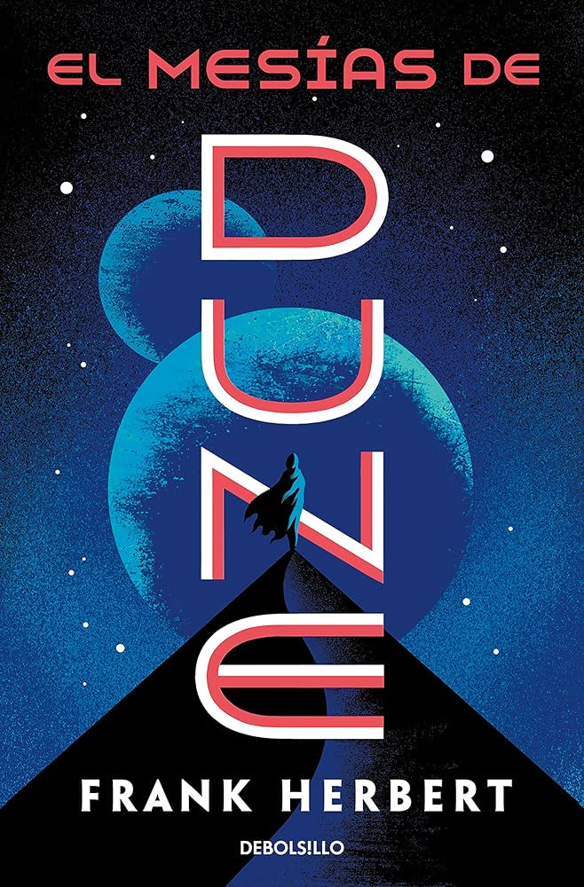
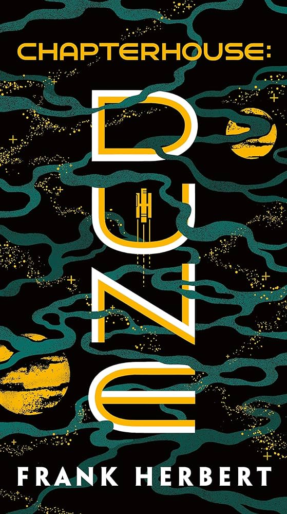

Dune relata la historia del planeta desértico Arrakis, única fuente de melange, la especia necesaria para el viaje interestelar y que además garantiza longevidad y poderes psíquicos. La administración de Arrakis es transferida por el emperador de la noble Casa de Harkonnen a la Casa Atreides. Dune relata la historia del planeta desértico Arrakis, única fuente de melange, la especia necesaria para el viaje interestelar y que además garantiza longevidad y poderes psíquicos. La administración de Arrakis es transferida por el emperador de la noble Casa de Harkonnen a la Casa Atreides. |
Arrakis, también llamado Dune : un mundo desierto en pos del sueño de convertirse en un paraíso, cuna de mil guerras que se han extendido por todo el universo y de un anhelo mesiánico que intenta alcanzar el sueño más antiguo de la humanidad...
Paul Atreides : un personaje mítico, perturbado por la cercana presencia de una sombra dominante: su hermana Alia. Y frente a ellos, los grandes intereses económicos, políticos y religiosos que sacuden los espacios interestelares: la CHOAM, la Cofradía espacial, el Landsraad, la Bene Gesserit. |
Leto Atreides, el hijo de Paul -el mesías de una religión que arrasó el universo, el mártir que, ciego, se adentró en el desierto para morir-, tiene ahora nueve años. Pero es mucho más que un niño, porque dentro de él laten miles de vidas que lo arrastran a un implacable destino. Él y su hermana gemela, bajo laregencia de su tía Alia, gobiernan un planeta que se ha convertido en el eje de todo el universo. Arrakis, más conocido como Dune.
Y en este planeta, centro de las intrigas de una corrupta clase política y sometido a una sofocante burocracia religiosa. |
 Esta cuarta entrega de la saga «Dune» centra su trama en la figura mesiánica de Leto Atreides II (hijo de Paul Atreides, héroe cuya estirpe hunde sus raíces en la legendaria casa griega de los Atridas) y nos lleva, a través de diversos dilemas éticos, a comprender los mitos que necesita la humanidad y a los héroes que los encarnan. El futuro, en el mundo de Dune, pertenece solo a los que son capaces de pensar por sí mismos. Esta cuarta entrega de la saga «Dune» centra su trama en la figura mesiánica de Leto Atreides II (hijo de Paul Atreides, héroe cuya estirpe hunde sus raíces en la legendaria casa griega de los Atridas) y nos lleva, a través de diversos dilemas éticos, a comprender los mitos que necesita la humanidad y a los héroes que los encarnan. El futuro, en el mundo de Dune, pertenece solo a los que son capaces de pensar por sí mismos. |
La expansión galáctica que siguió a la muerte de Leto ha terminado. Todos regresan al planeta madre, convertido de nuevo en el mundo inhóspito y seco de sus orígenes. El delicado equilibro entre las antiguas fuerzas está a punto de romperse. En este marco aparece un nuevo personaje: Sheeana, una chica que tiene el poder de invocar, controlar y conducir a Shaihulud, el gigantesco gusano de arena. |
 Las Honorables Madres se enfrentan, con sus terribles poderes, a la secular Bene Gesserit. Las revenidas Madres, ocultas y fortificadas en su planeta Casa Capitular, intentan revivir el viejo orden que les dio su antiguo poder en todo el universo. Un ghola de Miles Teg está siendo adiestrado para superar incluso a su poderoso antecesor. |